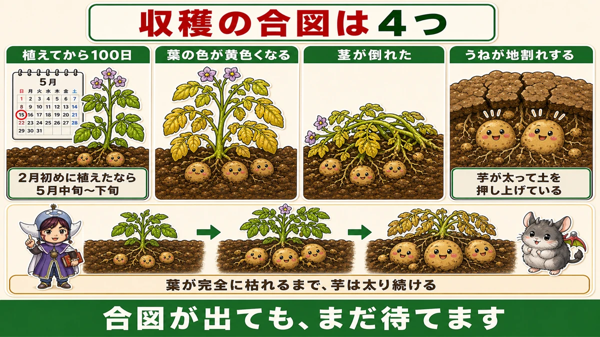
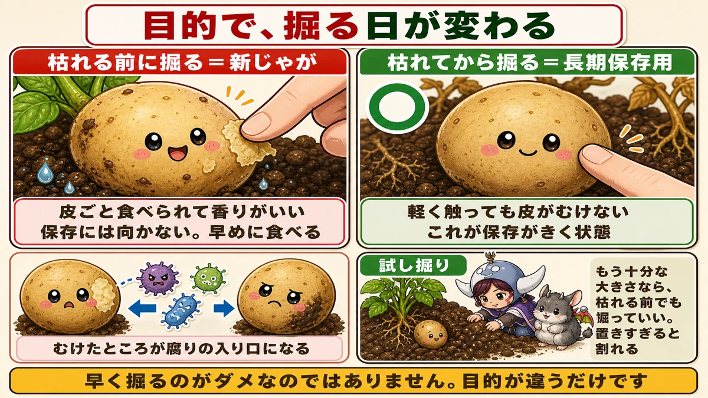
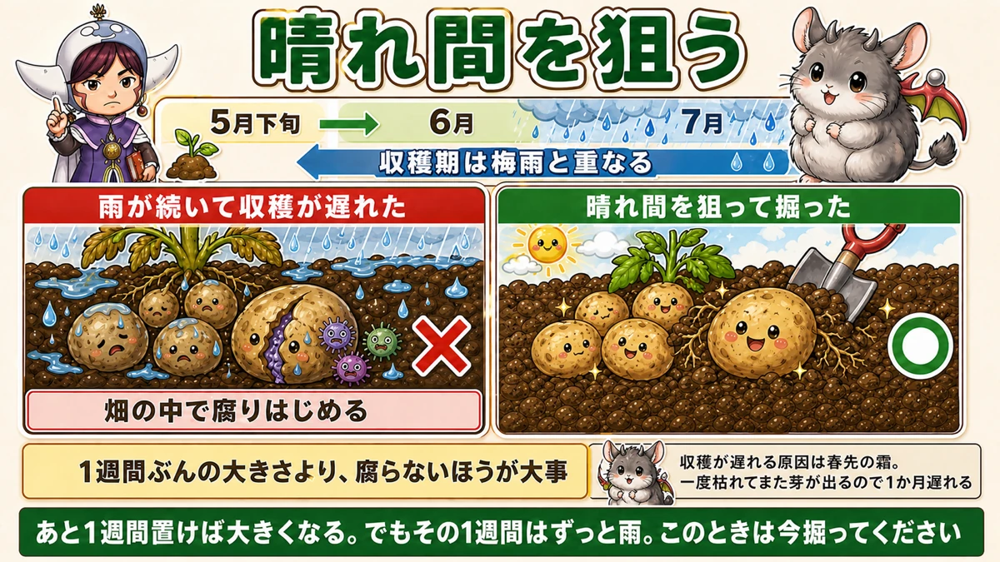
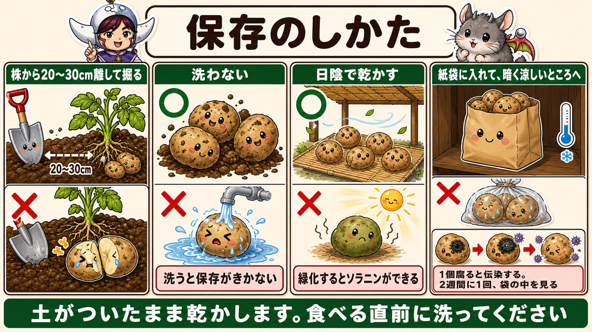

Lift them before the tops die and the skin rubs off 🥔 Which is why they rot
🗨️ "I never know when to dig them."
🗨️ "Several rotted after I lifted them."
🗨️ "I wanted them bigger and left it too long."
Hello, I'm Eiko. Eight years of growing vegetables organically and without pesticides, and a teaching licence in science.
Potatoes are easy to grow and only the harvest timing is hard.
The point, up front:
Lift them before the tops die and the skin rubs off. That's where the rot starts.
So "when do I dig them" has two answers — depending on whether you're eating them soon or storing them ☺️
Four signals

What this diagram says （図解の文字）
- There are four signals
- 100 days from planting — planted in late winter, that's late spring
- The leaf colour goes yellow
- The stems fall over
- The ridge cracks open — the tubers have swollen and are pushing the soil up
- Until the tops die completely…
- 100 days from planting
- The leaves yellow — the green drains out of the whole plant
- The stems fall over — they can no longer hold themselves up
- The ridge cracks — the tubers have swollen and are pushing the soil up from below. A crack in the ground means a big potato under it
A signal isn't a deadline
Important: the tubers keep bulking until the tops have died completely.
Yellow leaves don't mean dig today. Leave them to the last moment and they'll be bigger.
So why does everyone agonise? Because of the next part.
Eating soon, or storing?

What this diagram says （図解の文字）
- The purpose changes which day you dig
- Lifted before the tops die = new potatoes — eat them skin and all, good flavour ／ not for storing; eat them soon ／ a rubbed patch is where rot gets in
- ○ Lifted after the tops die = for storage — the skin doesn't rub off when handled ／ this is what "keeps well" looks like
- Test dig — if they're already big enough, you may lift before the tops die
For storage — wait until the tops have died
The reason is the skin.
Lifted before the tops die, the skin is still thin and rubs off as you dig — and a rubbed patch is an entry point for rot. One rotten potato then infects the ones around it.
Lifted after the tops have died, the skin doesn't move when you handle it. That is what "keeps well" physically means.
New potatoes are the deliberate opposite
A new potato is one lifted before the tops died. Thin soft skin, eaten whole, good aroma — and all of that comes from the skin not having set yet.
So digging early isn't wrong. It's a different purpose.
- Eating soon → lift before the tops die, and enjoy new potatoes
- Storing → lift after they've died
You can do both in one bed — half early, half late. That's what I do.
And leaving them too long splits them
A plant that has grown very well may already have large tubers, and waiting for the tops to die can leave them oversized and split.
So do a test dig. Scrape beside one plant and check a single tuber. If it's already big enough, lift before the tops die.
Racing the wet season

What this diagram says （図解の文字）
- Aim for a dry spell
- The harvest period overlaps the wet season
- × rain continues and the lifting is delayed — they start rotting in the ground
- ○ lifted during a dry spell — not rotting matters more than one more week of size
- Late harvests are usually caused by a late frost: the plant dies back, reshoots, and runs a month behind
The hardest thing about potatoes: the harvest window overlaps the wettest part of early summer.
Rain splits them and they rot
Water accumulating in the soil makes the tubers take up water suddenly and swell. The skin can't keep up and they split from the inside.
Then soil organisms get in through the split, and they begin rotting before you've even dug them.
So watch the forecast
"Another week would make them bigger — but that week is solid rain."
In that case, dig now, without hesitating. Not rotting beats one week of size.
It's the same move as finishing a crop before the heat arrives. You fit around the weather's schedule, not the other way round.
And don't let them get wet on the day
Don't leave lifted potatoes lying in the garden. Wet potatoes don't store. Lift on a fine morning and dry them the same day.
How to dig them

What this diagram says （図解の文字）
- How to store them
- Dig 20–30 cm away from the plant
- × don't wash them ○ — washed, they don't keep
- Dry them in the shade — × greening produces solanine
- Into a paper sack, somewhere dark and cool
- One rotten potato infects the rest. Look in the sack every two weeks
- Dry them with the soil still on. Wash just before you cook them
Put the spade in well away from the plant
Don't dig right beside the stems.
The tubers spread out around the plant, and a spade close in cuts them in half.
Go in 20–30 cm (8–12 in) away and lever towards the plant. Exactly the same reasoning as earthing up from further out: the potatoes are further out than you think.
Then use your hands
Once the plant is lifted, sift through the soil with your hands. Tubers that didn't come up with the plant are still in there.
Pick up every one, including the small ones. Left behind, they sprout next year and undo your rotation.
Storing them
Don't wash them
The most important rule. Don't wash lifted potatoes.
You'll want to. Washed, they don't keep — moisture stays on them and rot starts there.
Dry them with the soil on, and wash them just before cooking.
Dry in the shade
Spread them somewhere shaded with air moving.
Not in the sun. Light turns them green, and green flesh contains solanine. Same as with earthing up — light is still the enemy after lifting.
Half a day to a day, until the soil on the surface is dry and dusty.
Paper sacks
Put them in a paper sack. Not plastic — it traps moisture and they sweat. Cardboard is fine too; the requirement is that air can move.
Dark and cool
Store them somewhere dark and cool. In the light they sprout, and they green. Find the darkest, coolest spot in the house.
And look at them now and then
One rotten potato infects the healthy ones. It spreads to its neighbour, then the next, and by the time you notice the whole sack has gone.
Look inside every couple of weeks. Taking out one bad potato saves the rest.
To sum up
- ✅ Four signals: 100 days / yellowing leaves / fallen stems / cracked ridge
- ✅ They keep bulking until the tops die completely
- ✅ For storage, lift after the tops die
- ✅ Lifted early, the skin rubs off, and that's the entry point for rot
- ✅ New potatoes are the early ones — thin skin is the point of them
- ✅ Test dig; if they're big enough, lift early
- ✅ Left too long they can grow oversized and split
- ✅ The harvest overlaps the wet season; rain splits them and they rot in the ground
- ✅ Dig in a dry spell. Not rotting beats one more week of size
- ✅ Lift on a fine morning; wet potatoes don't keep
- ✅ A late harvest usually means a late frost knocked them back
- ✅ Dig 20–30 cm out; the tubers are further out than you think
- ✅ Collect every small one or they'll sprout next year
- ✅ Don't wash. Dry in shade. Paper sack. Dark and cool
- ✅ One rotten one infects the rest — check every two weeks
You don't have to do all of it. Test-dig one plant. Once you've seen the size, you can decide when to lift the rest 🥔
Thank you for reading!